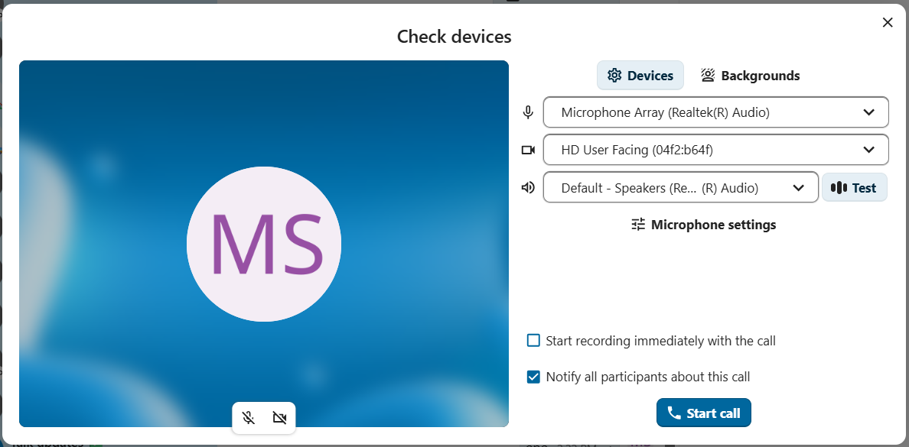
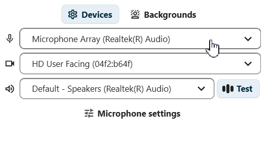
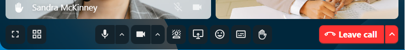
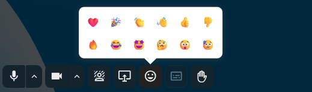

Entrar em uma chamada
Iniciar ou entrar em uma chamada
Navegador e cliente de desktop do Talk
Quando você estiver participando de uma conversa e tiver permissão para isso, poderá iniciar uma chamada a qualquer momento clicando em Iniciar chamada na barra superior. Se já houver uma chamada em andamento, participe clicando no botão verde Entrar na chamada na área de bate-papo ou na barra superior.

Nota
Se você ainda não concedeu permissão ao navegador ou ao cliente de desktop do Talk para usar seu microfone e sua câmera, será solicitado que o faça ao clicar em Iniciar chamada ou Entrar na chamada. Escolha o microfone e a câmera que deseja usar e clique em Permitir para conceder acesso aos seus dispositivos.
Você verá Configurações de mídia, onde poderá personalizar sua experiência de chamada:
{kind=link}

Controlar áudio e vídeo
Use os ícones do microfone e da câmera na parte inferior da pré-visualização do vídeo para ativar ou desativar o microfone e ligar ou desligar a câmera antes de entrar na chamada.
Nota
Se um ou ambos os ícones estiverem desativados (em cinza), isso significa que você não tem um microfone ou uma câmera instalados, ou que não concedeu permissão ao navegador ou ao cliente de desktop do Talk para usar o microfone ou a câmera. Verifique se concedeu permissão ao navegador ou ao cliente de desktop do Talk e certifique-se de que o microfone e a câmera não estejam sendo usados por outro aplicativo.
As configurações do dispositivo permitem que você escolha qual microfone e qual câmera deseja usar. Isso é útil se você tiver mais de um microfone ou câmera disponível:
{kind=link}

Fundos
Os fundos permitem substituir o fundo do seu vídeo por uma das imagens predefinidas. Você também pode enviar sua própria imagem ou escolher uma que já esteja no Nextcloud Arquivos. Como alternativa, selecione a opção desfoque para desfocar o fundo do seu vídeo em tempo real.

Entrar imediatamente em uma chamada
Se você quiser pular as Configurações de mídia no futuro, ative a opção Pular a pré-visualização dos dispositivos antes de entrar em uma chamada nas configurações do aplicativo. Nas próximas chamadas desta conversa, você entrará diretamente, sem passar pela janela de pré-visualização.
Gravar uma chamada
Se você iniciou a chamada e deseja gravá-la, marque a caixa de seleção Iniciar a gravação imediatamente com a chamada. A opção de gravação de chamadas pode não estar disponível para você, dependendo se os administradores do sistema ativaram essa opção e se você possui permissão de Moderador para a conversa. Se você estiver entrando na chamada e ela estiver sendo gravada, talvez seja necessário dar seu consentimento antes de poder participar. Para obter mais informações, consulte Gravação de chamadas.
Iniciar a chamada
Clique no botão Iniciar chamada, na parte inferior da seção Configurações de mídia, para notificar todos os participantes da conversa sobre a chamada. Se não quiser notificar os outros participantes, inicie uma chamada silenciosa abrindo o menu com os três pontos à esquerda do botão Iniciar chamada e selecionando Chamada sem notificação.


Nota
Os demais participantes podem definir as notificações individualmente para cada conversa, incluindo a opção de receber notificações de chamadas.
Seu status de usuário será definido como Em chamada e o ícone de status exibirá o emoji de balão de fala.
Clientes móveis
Quando você estiver participando de uma conversa e tiver permissão para isso, poderá iniciar uma chamada a qualquer momento tocando no ícone Telefone ou Vídeo na barra superior. O ícone Telefone inicia uma chamada apenas de voz; o ícone Vídeo inicia uma chamada de vídeo.
Uma chamada de voz utiliza o microfone e o fone de ouvido do aparelho, como uma chamada telefônica comum. Uma chamada de vídeo utiliza o alto-falante no modo viva-voz e ativa a câmera frontal por padrão; você pode desativá-la a qualquer momento.
Se outra pessoa iniciar uma chamada, você poderá receber uma notificação e seu dispositivo poderá tocar ou vibrar, dependendo das suas configurações de notificação. Toque em Telefone ou Vídeo para participar, ou toque no botão vermelho para recusar. Ao recusar, a notificação da chamada será encerrada nesse dispositivo.
Você pode controlar o microfone e a câmera (se estiver em uma videochamada) usando as opções exibidas na parte inferior da tela.
Seu status de usuário será definido como Em chamada e o ícone de status exibirá um balão de fala.
Durante uma chamada
Depois de entrar em uma chamada, você verá a tela da chamada. Ela exibe as imagens de vídeo de todos os participantes que estão na chamada no momento, além de informações adicionais e controles.

O elemento mais à esquerda mostra o tempo decorrido da chamada.
Ao lado, você verá o número de participantes que estão na chamada atual. Ao clicar nesse número, a barra lateral direita é aberta e exibe a lista de participantes. Os participantes que já entraram na chamada serão listados primeiro.
Você também verá o tempo de fala de cada participante, caso tenham falado durante a chamada:

Você pode acessar opções e configurações adicionais de chamadas pelo menu com três pontos na barra superior.

Configurar salas temáticas
As salas temáticas permitem dividir uma chamada em grupos menores para discussões mais específicas. Dependendo das suas permissões e da configuração da sua instância, essa opção pode não estar disponível para você. Para obter mais informações, consulte Salas temáticas.
Baixar a lista de participantes da chamada
Você pode baixar a lista de participantes de uma chamada pelo menu de três pontos na barra superior. Isso baixa um arquivo CSV com os nomes e endereços de e-mail de todos os participantes.

O arquivo CSV contém as seguintes colunas:
Name: O nome do participante.
Email: O endereço de e-mail do participante.
Type: Indica se o participante é um usuário registrado ou um convidado.
Identifier: Identificador exclusivo do participante.
Controlar áudio e vídeo
A barra inferior da tela de chamada oferece controles de mídia, configurações de layout e outros recursos que você pode usar durante uma chamada.
{kind=link}

Use the microphone and camera icons to mute/unmute your microphone and enable/disable your camera.
You can also use the keyboard shortcuts M to mute/unmute your microphone and V to enable/disable your camera.
Use the space bar for push-to-talk: holding space temporarily unmutes you while muted, or temporarily mutes you while unmuted.
Reações
O botão de reações permite enviar uma reação com um emoji para todos os participantes da chamada.
{kind=link}

Todos os participantes verão o emoji surgindo na parte inferior da tela da chamada. O emoji desaparece após dois segundos.
Levantar a mão
Ao clicar em Levantar a mão, os moderadores serão notificados e um ícone aparecerá ao lado do seu nome. Isso também pode ser feito usando o atalho de teclado R.
Tela cheia
Ajusta a janela do navegador ou o cliente de desktop do Talk para o modo de tela cheia. Também disponível através do atalho de teclado F. Pressione ESC para voltar à visualização normal.